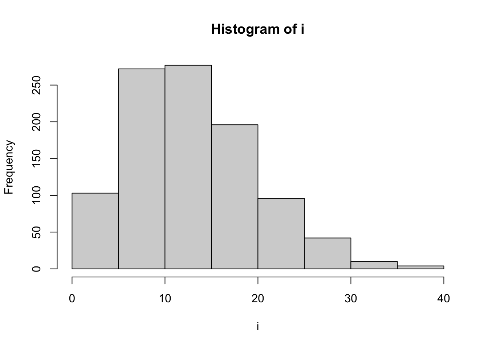

library(survival)
library(tidyverse)1 パッケージã®èªã¿è¾¼ã¿
2 データã®èªã¿è¾¼ã¿
ライフのデータ
dsu01<-read_csv("
life
28
30
32
30
25
27
24
23
29
29
29
31
38
33
32
29
30
18
28
28
24
23
28
29
27
26
28
28
28
27
",show_col_types = FALSE
)hist(dsu01$life,breaks = max(dsu01$life)-min(dsu01$life)+1)3 ワイブル
3.1 確率密度関数
\[ f(t)=\frac{m}{\eta}\left(\frac{t}{\eta}\right)^{m-1}e^{-\left(\frac{t}{\eta}\right)^m} \]
weibull_d<-function(m,t,eta){
k<-(m/eta)*(t/eta)^(m-1)*exp(-1*((t/eta)^m))
return(k)}\(m=2\), \(\eta=15\)ã®å ´åˆ
m1<-2
eta1<-15
plot(weibull_d(m1,c(1:35),eta1))
3.2 ワイブル分布に従う乱数
i<-rweibull(1000,shape = m1,scale = eta1)
hist(i)
乱数からワイブルのパラメーターを算出する方法：survregを使う。
t<-survreg(Surv(i)~1, dist="weibull")survregの結果は、上述の確率密度関数のパラメーターとして使うには換算する必要がある。
\(m\)
1/t$scale[1] 2.051372\(\eta\)
exp(unname(t$coefficients))[1] 15.540614 R version
R.version.string[1] "R version 4.2.2 (2022-10-31)"5 Python
from reliability.Fitters import Fit_Weibull_2P
import matplotlib.pyplot as plt
fail_times = [
9402.7,
6082.4,
13367.2,
10644.6,
8632.0,
3043.4,
12860.2,
1034.5,
2550.9,
3637.1
]
wb = Fit_Weibull_2P(failures=fail_times)[1m[23m[4m[49m[39mResults from Fit_Weibull_2P (95% CI):[0m
Analysis method: Maximum Likelihood Estimation (MLE)
Optimizer: TNC
Failures / Right censored: 10/0 (0% right censored)
Parameter Point Estimate Standard Error Lower CI Upper CI
Alpha 7965.97 1573.53 5408.78 11732.2
Beta 1.68128 0.444137 1.0018 2.82162
Goodness of fit Value
Log-likelihood -97.1296
AICc 199.973
BIC 198.864
AD 1.5487 plt.show()Python package reliability - Fitting a specific distribution to data